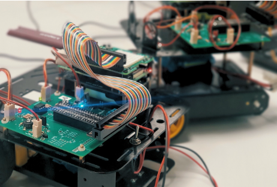

Robot Mobile
Dans ce projet, j'ai eu l'opportunité de concevoir un circuit imprimé sur KiCad destiné à
piloter des capteurs capables de détecter une ligne noire afin de guider un robot de manière
autonome. Le dimensionnement des composants ainsi que leur soudure sur la carte électronique
ont constitué des étapes essentielles à la réussite du projet.
S'agissant de mon tout premier projet de formation, j'ai rencontré plusieurs difficultés,
notamment lors du dimensionnement de certains composants et à cause de quelques oublis de
conception. Malgré ces défis, cette expérience m'a permis d'acquérir une première approche
méthodique du travail en électronique et de développer davantage de rigueur dans ma démarche
de conception.